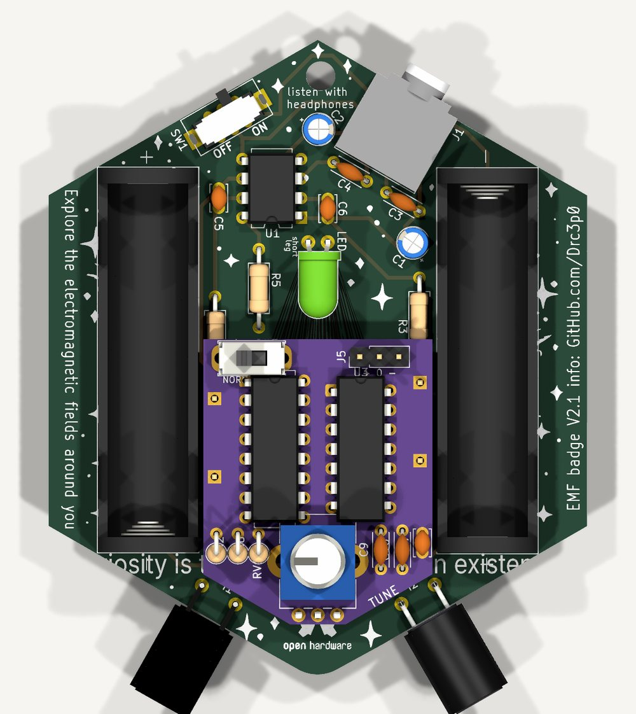

A KiCad schematic of the chopper
Choose the options and download a KiCad 9 schematic of the tuning circuit, with library symbols, footprints and LCSC part numbers already filled in.
The circuit comes from simulation. The file comes from a script, and KiCad itself has checked every version of it: the connections, the footprints, the 3D models. No board has been made from it yet. What was checked lists exactly what, and what was not.
Pick the build
What is on the sheet
| Ref | Value | Part number | Footprint | LCSC |
|---|
Every symbol carries two extra fields. LCSC holds the LCSC part number, under the field name that the usual JLCPCB and LCSC bill-of-materials tools look for. MPN holds the maker's part number. Capacitors have no LCSC number: pick ones whose lead spacing suits the footprint, 2.5 mm for the small values and 5 mm for 100 nF and 1 µF.
Using it
- Download the file and open it in KiCad 9's schematic editor. Its symbols are copies of KiCad's own library symbols, kept inside the file, so it opens whole even if a library is missing.
- Additions only: select everything, copy, and paste it into the badge's schematic. Use Paste Special and keep the annotations if you want the part numbers as drawn; they start after the badge's own. Then make the one change the notes on the sheet describe: on the chip build, delete the wire from each coil to its 100 Ω resistor and put the two labels on the ends. The power symbols are the badge's own
+VDC,-VDCandGND, so they join by name. - With the badge: the sheet is a complete schematic, the badge redrawn with its own part names and footprints and the chopper beside it. Use it to try a layout from scratch, or to read the whole circuit in one place.
- Update the board from the schematic. Each part arrives with its footprint, and each footprint brings its 3D model, except the pot: KiCad ships no model for either pot footprint.
What the options mean
Switch chip is the recommended build from the main page: one 74HC4053 and one 74HC14. KiCad has no 74HC4053 symbol, so the sheet uses its CD4053B symbol, which has the same pins, with the value changed.
Transistors is the cheapest version that works in simulation: a two-transistor oscillator and one FET per coil. It is about 25 dB hissier while tuning and covers about 50 to 300 kHz. It is here so its board area can be compared. The FET is a BSS138 in a surface-mount SOT-23, because the through-hole 2N7000 fades as the cells sag.
True bypass swaps the one-pole mode switch for a two-pole one that takes each coil straight to its resistor. In NORMAL the badge's signal path is then the stock one, without the chip's resistance, which otherwise costs about 2.5 dB below 300 Hz on fresh cells and more on tired ones. Two things to know. The oscillator keeps running in NORMAL, because both poles are used by the coils; with the coils disconnected from the chip, all that can reach the amplifier is charge fed through the chip's open switch, which is not simulated. Expect ultrasonic ripple at the output, as in tuned mode, and nothing you can hear. A three-pole switch would stop the oscillator too, but KiCad's library has no footprint for one.
Comb mode adds a 330 pF capacitor, a 6.8 kΩ resistor and a second small switch for TUNED or COMB. The main page draws a single three-position switch. The sheet uses two two-position switches instead: the only three-position slide footprint in KiCad's library has no 3D model, its pin order could not be confirmed against the symbol, and a search did not find the part at LCSC.
The knob is a 100 kΩ linear pot either way, wired so that clockwise raises the frequency if pin 3 is the clockwise end. Swap pins 1 and 3 to reverse it. Other pots, and what they cost, are on the pots page.
The tone filters and the reversing chopper from the main page are not in the generator.
What was checked
Connections. The options make twenty different files: five circuits, two knobs, with and without the badge. Each one was exported as a netlist by KiCad 9.0.9 and compared, net for net, with a netlist written out by hand from the circuit description. All twenty match.
Electrical rules. With the badge on the sheet, KiCad's rule check reports no errors. It leaves two kinds of warning. One is that the switch chip's grounded pins are tied to a power rail, which is what an analog switch wired this way looks like. The other is that three of the badge's own footprints are not in KiCad's standard library: DPDT slide switch, CP_Radial_D4.0mm_P2.54mm, Inductor_D5.0mm_Horizontal_O3.81mm_Z9.0mm. They are in the badge project. An additions-only sheet reports its power rails as undriven and its coil labels as unconnected, until it is pasted into the badge schematic.
Footprints. Each footprint was looked up in KiCad 9.0.9's library. Its pad numbers were compared with the symbol's pin numbers, and its 3D model file was looked for in KiCad's model package.
| Part | Footprint | In KiCad's library | Pads match pins | 3D model |
|---|---|---|---|---|
| 74HC4053 switch chip | Package_DIP:DIP-16_W7.62mm | yes | yes | yes |
| 74HC14 inverters | Package_DIP:DIP-14_W7.62mm | yes | yes | yes |
| Resistors | Resistor_THT:R_Axial_DIN0207_L6.3mm_D2.5mm_P7.62mm_Horizontal | yes | yes | yes |
| Capacitors, 2.5 mm pitch (330 pF, 100 pF) | Capacitor_THT:C_Disc_D3.4mm_W2.1mm_P2.50mm | yes | yes | yes |
| Capacitors, 5 mm pitch (100 nF, 1 µF) | Capacitor_THT:C_Disc_D4.3mm_W1.9mm_P5.00mm | yes | yes | yes |
| Pot, 9 mm shaft (Bourns PTV09A) | Potentiometer_THT:Potentiometer_Bourns_PTV09A-1_Single_Vertical | yes | yes | none in KiCad |
| Pot, square trimmer (3386P) | Potentiometer_THT:Potentiometer_Bourns_3386P_Vertical | yes | yes | none in KiCad |
| Mode switch, one pole (C&K OS102011MS2QN1) | Button_Switch_THT:SW_Slide_SPDT_Straight_CK_OS102011MS2Q | yes | yes | yes |
| Bypass switch, two poles (C&K JS202011CQN) | Button_Switch_THT:SW_CK_JS202011CQN_DPDT_Straight | yes | yes | yes |
| 2N3904 | Package_TO_SOT_THT:TO-92_Inline | yes | yes | yes |
| BSS138 | Package_TO_SOT_SMD:SOT-23 | yes | yes | yes |
Pin order on the parts that can catch you out.
- One-pole switch. The middle pad is the pole. C&K's datasheet lists the connections as 1-2 and 2-3.
- Two-pole switch. The poles are pads 2 and 5. The footprint numbers its pads around the part like a chip, so the slider joins 2-1 with 5-6, or 2-3 with 5-4. The sheet is wired that way. That pairing is read from where the pads sit, not from a drawing of the part's insides, so check it with a meter before ordering boards.
- Pot. KiCad's footprint is named for the Bourns PTV09A-1. The part at LCSC is a PTV09A-4, the same rear-mount body without the bushing. Bourns' datasheet gives one board pattern for its rear-mount styles, as far as its text shows; compare the drawing before ordering. Pin 2 is the wiper. Which end is clockwise is not stated in the text, so check the direction on the bench.
- Transistors. 2N3904 in TO-92: emitter, base, collector on pads 1, 2, 3. BSS138 in SOT-23: gate, source, drain.
Not checked. Nothing has been built or laid out. The resistor LCSC numbers were read from LCSC's listing titles, not from the product pages. Stock and prices for the switches were not read. KiCad's footprints for the two switches are drawn for the exact C&K parts named; a cheaper switch will need its own footprint.
Or as an add-on board
An idea from planning this: leave the badge's layout alone, and make the chopper a small board that plugs into the holes of the two 100 Ω resistors.
It fits better than it has any right to. Each of those resistors sits between a coil and an amplifier input, so its two holes are exactly the two points the chopper has to come between. Four holes give both coils and both inputs. The resistors move onto the add-on, and the badge's own board does not change.


The measurements come from the badge's published board file.
- The two resistors are 26.7 mm apart, each with its holes 10.2 mm apart, in a channel about 30 mm wide between the battery holders.
- The add-on drawn here is 29.8 mm wide and 37 mm tall. Its lower edges are parallel to the badge's bottom edges and sit about 4.5 mm inside them, which leaves the coil pads and legs clear.
- It stands 5 mm off the badge, which clears the resistors beside it. The battery holders and the LED are taller, so it stays between them.
- It carries the base build: both chips, the pot, one mode switch, the 2.2 kΩ resistor, three capacitors, and the two 100 Ω resistors standing on end.
Three things it does not solve yet. It needs power, which the resistor holes do not carry: the picture shows a three-pin header for +, 0 V and −, and the nearest place to pick those up is the op-amp, on pins 8, 4, and 3 or 5. It is a tight fit: the board's edges come within a fraction of a millimetre of the battery holders, and that has not been checked against real parts. And only the parts are placed. Nothing is routed, and with two DIP chips on a board this size the routing may want two layers of care.
The board in the picture is a real KiCad file, with the outline and the four leg positions taken from the badge: addon-concept.kicad_pcb. It is drawn as seen from the back of the badge, so its left is the badge's right.
Sources
- EMF Explorer Badge design files, CC BY-NC-SA 4.0, for the schematic, the board outline, and the positions of the resistors, coils and battery holders
- KiCad 9.0.9 symbol, footprint and 3D model libraries, for the symbols, the pad numbers and positions, and the models
- Bourns PTV09 datasheet, for the pot's ordering codes and board pattern
- Electromagnetic Symphony, Make, for the parts list that names the coils, and the Bourns RLB series datasheet for their size
- C&K OS series datasheet, LCSC's copy, for the one-pole switch's connections
- LCSC listings for the OS102011MS2QN1 and JS202011CQN switches, the 74HC4053, the 74HC14, the PTV09A pot, the 3386P trimmer, and the UNI-ROYAL MFR0W4F resistors